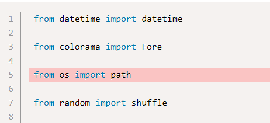
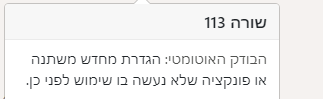
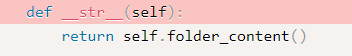

תיקנתי תודה. הטעות נבעה מהעלאה חוזרת לתיקון פרט אחר ולא זכרתי שכבר ביצעתי שינויים לצורך תירגול בהמשך.
ושוב תודה.
היי יש לי 2 בעיות בתרגיל 118 סקרנות:
-
אחרי כמה ניסיונות לתקן את הבודק האוטומטי בטעות העלאתי את תרגיל 119 במקום 118 ועכשיו זה נתקע לי לא מצליחה לעדכן בחזרה את התרגיל.
-
השגיאה הבאה מופיעה לי , לא הצלחתי להבין מה הבעיה - אם מישהו נתקל בבעיה דומה אשמח לעזרה.
AssertionError: assert None + where None = <bound method Poll.remove_option of <test_checks.Poll object at 0x7fb87e32f0d0>>(‘Yellow’) + where <bound method Poll.remove_option of <test_checks.Poll object at 0x7fb87e32f0d0>> = <test_checks.Poll object at 0x7fb87e32f0d0>.remove_option
- מפורטת דרך השימוש בreupload בפוסט המקורי פה.
- האם הפונקציות שלך מחזירות את מה שהתבקשו?
לייק 1
אני מקבל גם כמופרט ב2. ואכן הפונקציות מחזירות True בכל מה שבקשו, וספיציפית הremove option שלי עובדת כמו שצריך…
האם הן גם מחזירות False כשביקשו?
לייק 1
אוקיי פספסתי את זה…איזה פזיזות מצידי…תודה!
איך אתם בודקים מה מחזירה הפונקציה?
תנסו a = function()
print(a)
יש סיכוי שאתם מחזירים אובייקט כלשהוא, ולא בדיוק מה שביקשו? (לשים לב שיש פירוט של מה כל פונקציה צריכה להחזיר בגוף השאלה, אחרי סעיף 5)
תודה ותודה!! 1 ו2 נפתרו באמת פספסתי את הקטע של הFalse.
@devorack
העלתי תרגיל והבודק האוטומטי הקפיץ לי הערה:
“חסר פה פסיק עוקב”
חלק הקוד בו הופיעה ההערה בנוי ככה-
שורה ראשונה - השמה למשתנה ופתיחה של סוגריים
שורה שנייה - האיבר הראשון בטופל ולאחריו פסיק
שורה שלישית - האיבר השני בטופל (פה מופיעה השגיאה)
שורה רביעית - סגירת הסוגריים
למישהו יש הסבר?
הוסף פסיק אחרי האיבר האחרון
למרות שלא מגיע איבר נוסף אחריו?
תודה על ההסבר, הוספתי
אני מקבל שגיאה בבדיקה האוטומטית בתרגיל חללר
TypeError: type object argument after * must be an iterable, not int
לא ברור לי מה הבעיה, האם זה הבודק שמנסה להכניס זמן בפורמט שונה ממה שהגדרתי או שזו בעיה אחרת
אני מקבל שגיאה בבודק הואטמטי על סידור מודולים לא נכון. בהתחלה סידרתי את זה לפי ה-from ואז קיבלתי שגיאה על ה-datetime אז העברתי אותו להיות ראשון כך שזה יהיה מסודר לפי ה-import ועכשיו אני מקבל שגיאה על ה-path למרות שהוא מסודר במקום הנכון מבחינה אלפבתית על פי שני הפרמטרים. אני לא מבין מה אני עושה לא נכון?

colorama הוא מודל לא מובנה.
לייק 1
תודה!
הסתדר לי עכשיו.
רק לא מובן לי למה colorama עובד לי בלי שהתקנתי אותו לפני אם זה מודול לא מובנה…
colorama מגיע כחלק מההתקנה של anaconda.
לייק 1
בלי קשר , הייתי מציע להסיר את השורה רווח בין כל אחד אין לזה צורך. שורה רווח תכניס רק בין מודלים מובנים ללא מובנים
לייק 1


לא מבינה מה הבעיה. בפונקציה folder content הגדרתי מחרוזת של בעצם מה מכילה התיקייה כדי להדפיס את תוכן הספריה. הפונקציה מחזירה מחרוזת.
אז איפה הבעיה?